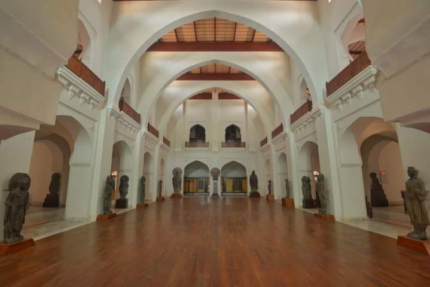

<div class="portfolio-single-load clearfix">
    <div class="custom-full-width-box">
        <div class="custom-container">
            <div class="custom-row align-items-center">
                <div class="custom-image-column">
                    
                </div>
                <div class="custom-text-column">
                    <h2 class="custom-heading">Qissa Khwani Bazaar</h2>
                    <p class="custom-paragraph">
                        Delve into the archaeological wonders of Peshawar at the Peshawar Museum, founded in 1907 by British archaeologist Harold Deane. Located in a colonial-era building, the museum's collection includes artifacts spanning thousands of years of history, from the prehistoric period to the modern era. Highlights of the museum's collection include Gandharan sculptures, Islamic calligraphy, coins, manuscripts, and ethnographic artifacts, providing insight into Peshawar's cultural heritage and historical significance
                    </p>
                </div>
            </div>
        </div>
    </div><!-- .custom-full-width-box end -->

</div><!-- end single-project -->
